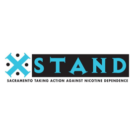
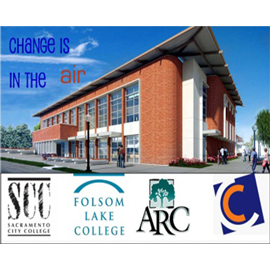
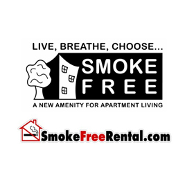

About
Sacramento Taking Action Against Nicotine Dependence aka STAND, got its start in 2000 as a result of “students taking action against nicotine dependence on college campuses." The students conducted grass roots advocacy campaigns on colleges, in bars, in night clubs, and in the community to counter the tobacco industry’s influence and targeting of young adults in these venues.
STAND’s current focus is tobacco control policy, advocacy and systems change, as well as tobacco cessation.
STAND receives funding from the California Tobacco Control Program, the Tobacco Related Disease Research Program, Sierra Health Foundation and CVS Caremark.
STAND Programs
- 
-
STANDing Up to Tobacco
Breathe California of Sacramento-Emigrant Trails advocates for greater protection from tobacco smoke exposure in outdoor dining areas, on college campuses and at multi-family housing communities. Following the State Health Officer’s Report on E-cigarettes, we also urge local cities and counties to include e-cigarettes in their no smoking laws. We believe everyone should breathe free from exposure to toxic air contaminants like secondhand smoke where they live, work, play and learn. We also believe in protecting youth from tobacco initiation. To support our local and state advocacy efforts surrounding these efforts, click here to join our advocacy network.
-

-
CVS Smoking Cessation Project
As a result of CVS Pharmacy’s new policy to stop selling tobacco, they are partnering with community organizations to offer tobacco cessation. STAND is collaborating with CVS and Quality Property Management to offer a series of free, 4-part classes at multifamily housing communities. Participants receive guidance from a trained cessation facilitator, optional nicotine replacement therapy, a quit smoking kit and a gift card after completion. The objective is to help each person achieve the ultimate goal of quitting and staying quit.
- 
-
Learn, Work, Breathe Smoke Free
This project focuses on tobacco-free policy adoption, implementation and enforcement on community college campuses, universities and vocational institutions. STAND, in partnership with the schools, advocates for the right to breathe clean air on school campuses.
- 
-
Live, Breathe, Choose Smoke Free
This project educates residents and the rental housing industry on secondhand smoke issues in multifamily housing and advocates for laws to protect individuals and families from the secondhand smoke. STAND and the Rental Housing Association developed www.smokefreerental.com, a searchable database for residents seeking smoke-free housing and for agents to list smoke-free properties.
-
Project Reveal
Through a partnership with the Sacramento Chinese Community Service Center, Reveal is investigating how the tobacco industry markets tobacco in the retail environment. Youth complete a tobacco retail assessment of 100 stores in the Sacramento area to gain awareness of pricing, promotion and placement of tobacco products. Then the youth develop and implement an anti-tobacco advocacy campaign after participation in a Youth Summit. Reveal will provide the opportunity for young people to gain the ability and authority to make decisions that help improve the policy environment, change social norms and reduce smoking initiation and consumption in their communities.
-
Street Team Research Project
Which is more effective in helping community college students to quit smoking: a referral to the student health center, peer-to-peer motivational interviewing, or referrals to the California Smokers’ Helpline? That is the question the STAND Street Team Research Project will attempt to answer. Awarded funds from the Tobacco-Related Disease Research Program (TRDRP), the project is now underway at the Sacramento City College campus. Partnering with the University of California, Davis Medical Center the research aims to evaluate the feasibility and effectiveness of two smoking cessation interventions for college students. STAND recruits and trains college students to work together as a Street Team, to assist student smokers to quit smoking. Interested Street Team members can complete a member application. Street team members may earn credits towards classes, internship hours and prizes. Interested study participants can complete a Study Participant Interest Form.
STAND Program Staff
- Kimberly Bankston-Lee
Senior Program Director - Carol Maytum
Program Manager - Jen-Ann Lee
Project Consultant - Sarah Hellesen
Research Assistant